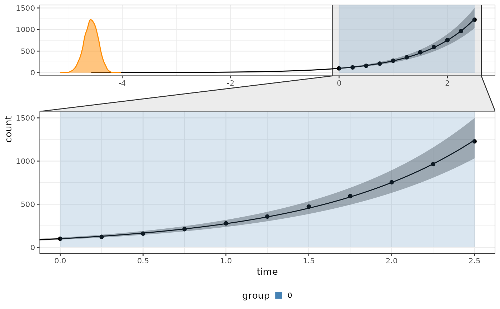

Fit a Growth Model to a Bipod Object
fit.RdThis function fits a specified growth model to a bipod object, allowing for exponential
or logistic growth fitting. If both models are considered, an automatic model selection
process determines the best fit.
Usage
fit(
x,
growth_type = "exponential",
infer_t0 = TRUE,
variational = FALSE,
factor_size = 1,
model_selection_algo = "bayes_factor",
chains = 4,
iter = 5000,
cores = 4
)Arguments
- x
A
bipodobject containing population count data over time.- growth_type
Character string specifying the growth model to fit. Options are:
"exponential"– Fits an exponential growth model."logistic"– Fits a logistic growth model."both"– Performs model selection between exponential and logistic growth. Default is"exponential".
- infer_t0
Logical value indicating whether to infer the initial time of population origin (
t0). IfTRUE,t0is estimated as part of the model fitting. Default isTRUE.- variational
Logical value indicating whether to use variational inference instead of Markov Chain Monte Carlo (MCMC) sampling. If
TRUE, variational inference is applied; otherwise, MCMC is used. Default isFALSE.- factor_size
Numeric value used to scale population counts in the
bipodobject. Must be positive and no larger than the minimum count value. Default is1.- model_selection_algo
Character string specifying the model selection algorithm when
growth_type = "both". Options are:"bayes_factor"– Compares models using Bayes factors."mixture_model"– Uses a mixture modeling approach to estimate probabilities. Default is"bayes_factor".
- chains
Integer specifying the number of MCMC chains. Ignored if
variational = TRUE. Default is4.- iter
Integer specifying the number of MCMC iterations. Ignored if
variational = TRUE. Default is5000.- cores
Integer specifying the number of CPU cores to use for parallel processing. Default is
4.
Value
Returns the input bipod object with additional attributes:
fit– The fitted growth model.fit_info– Metadata about the fitting process, including:Sampling method (MCMC or variational inference)
Factor size used for scaling
Selected growth model
Model selection details (if applicable)
Examples
# Create a bipod object with your data
data = biPOD::sim_stochastic_exponential(100, 1, 0, 10, .25)
x = biPOD::init(data, "sample")
#>
#> ── biPOD - bayesian inference for Population Dynamics ──────────────────────────
#>
#> ℹ Using sample named: sample.
x <- fit(x, growth_type = "both", model_selection_algo = "bayes_factor")
#> ℹ Fitting with model selection.
#>
#> ℹ Model selection finished!
#> ℹ Model with "Exponential" growth deemed better with "Very strong" evidence. (BF = 77.5986476619042)
biPOD::plot_fit(x, CI = .8)
